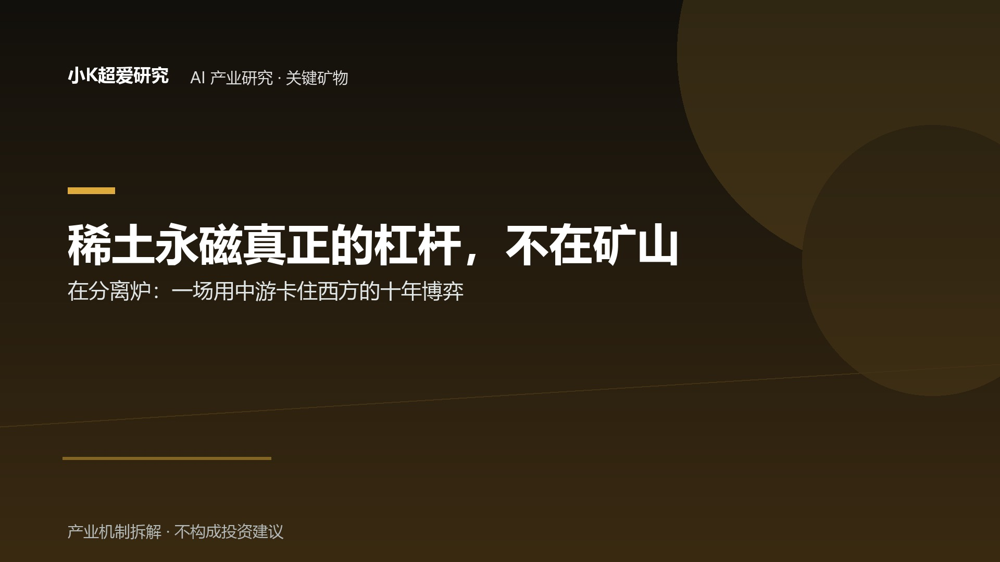

稀土永磁真正的杠杆不在矿山，在分离炉
一场中国用“中游”卡住西方的十年博弈
稀土永磁真正的杠杆不在矿山，在分离炉
——一场中国用"中游"卡住西方的十年博弈
核心命题（反直觉）：把全世界的稀土矿挖空，也造不出一块钕铁硼磁体——除非经过中国的分离炉。所有人谈"稀土卡脖子"，直觉都是"谁有矿"。但 2025 年的现实是——矿山到处都有，真正卡死全球电动车、风电、军工产线的，是那几条把稀土矿变成磁体的分离与永磁产线。谁握着分离炉和烧结炉，谁就握着谈判桌上的杠杆。这不是资源博弈，是中游加工能力的博弈。
【事实】产业链三层权力结构：越往下游，中国份额越高
稀土永磁的价值不在"挖出来"，在"炼出来、压出来"。把产业链拆成三层看中国的份额，会看到一个反直觉的现象——越往下游，控制力越强：
| 环节 | 中国全球份额 | 数据口径 |
|---|---|---|
| 稀土采矿（2024） | 产量 68.54%（27/39 万吨），储量 48.41% | USGS 2024 Mineral Commodity Summaries |
| 冶炼分离（2023） | 约 92%（产品产量） | 弗若斯特沙利文 / 兴业证券 |
| 烧结钕铁硼永磁体制造 | 约 94% | IEA Global Critical Minerals Outlook 2025 |
关键含义：采矿环节中国只是"相对多数"（68%），但到了分离和永磁体环节，中国变成"压倒性垄断"（90%+）。美国地质调查局自己都承认，2024 年美国对稀土化合物和金属 80% 依赖进口，中国是第一大供应国。
【推论】"去中国化"如果只是去"采矿中国化"，毫无意义——矿挖出来，最终还是得送回中国的分离炉。IEA 做过一个"N-1"压力测试：如果把中国供应完全移除，非中国地区剩余产能只能覆盖 35%–40% 的需求。没有任何其他关键矿产的缺口有这个量级。
【事实】2025 出口管制事件链：从"材料"打到"技术"
这场博弈在 2025 年从隐性变成显性，时间线非常清晰：
- 2025-04-04：商务部、海关总署联合公告，对钐、钆、铽、镝、镥、钪、钇等 7 类中重稀土物项实施出口管制，实行逐案许可。
- 2025-05：福特芝加哥工厂因磁体短缺暂停 Explorer 生产约一周，CEO Farley 称供应"hand-to-mouth"（挣一顿吃一顿）。
- 2025-10-09：管制升级——范围扩展到加工技术、设备，以及含哪怕 0.1% 中国稀土成分的成品；并首次明确禁止对美军事终端用途。
- 2025-11-07：中美缓和，宣布暂停 6 项出口管制措施至 2026-11-10（紧张期暂时降温）。
- 2026 年初：限制进一步延伸到日本，对日军事终端用户禁运稀土，并放缓 broader 商业许可审核。
【机制】为什么"卡脖子"卡在中游，而非上游
西方不是没矿。美国有芒廷帕斯，澳洲有 Mt Weld，问题是矿挖出来之后呢？
四个结构性壁垒让西方 5–10 年内难脱钩：
- 分离 know-how：徐光宪"串级萃取理论"奠基的中国溶剂萃取体系，是数十年工程迭代的结果。海外项目缺成熟工艺、工程人才和环保配套，回收率低、一致性差。中国分离成本约 4–7 美元/kg，Lynas 要 10–15 美元/kg，且纯度还差那要命的 0.04%。
- 专利墙：2025 年全球稀土分离相关专利申请 1780 件，中国申请人占 62.3%。绕开中国专利体系的独立路线（离子液体、电化学分离、生物浸出）仍处早期。
- 重稀土依赖缅甸：2023 年缅甸供应全球约 60% 的镝（耐高温、保磁力，电动车与风电电机必需品）、铽（同样用于高矫顽力磁体，军工与高端电机必需）；中国自身也是缅甸矿的最大外部用户。但 2025 年底缅甸实施全面禁采，这条补充通道实质性受阻。
- 环保与电力门槛：Lynas 西澳卡尔古利工厂 2025 年四季度因电力供应中断频繁，产量大降——海外补链连"稳定供电"都成问题。
【推论】西方能"挖矿"，但挖出来的矿大多仍要借道中国加工能力才能变成可用材料。这不是地质问题，是中游工程能力问题。
【机制】"中国价格"与"世界价格"的脱钩
管制之后最震撼的商业后果，不是"买不到"，而是"两套房价格"——同一种稀土，在中国国内和海外是两套价格体系。
- 欧洲市场氧化镝涨至约 1450 美元/kg，氧化铽约 4500 美元/kg；
- 氧化钇在 ex-China 市场涨约 140 倍、逼近 1100 美元/kg；
- 据 S&P Global，镝在欧洲一年内涨 8 倍至 2250 美元/kg；
- 同期中国国内同元素价格仅为海外的 1/5 到 1/10——一个双层市场就此固化。
这意味着中国不仅控制"量"，还事实上掌握"定价权"的调节阀：出口管制收紧的是对外那一端的供给，国内充裕产能压住的是内盘价格。海外买家为稀缺性支付溢价，国内下游却享受低成本——这是分离炉垄断地位的终极变现方式。
【博弈地图】六方利益与杠杆（含议价空间打分）
这场博弈的真正主角不是"国家 vs 国家"那么简单，而是六类玩家在一条链上的角力。用"议价空间 ≈ 技术壁垒 × 切换成本 × 供应集中度 × 客户依赖度"框架给各方隐性打分：
- 中国（规则制定者）：技术壁垒极高、切换成本极高（下游离不开其加工）、供应集中度极高、客户依赖度中高 → 议价空间极高。不切断总出口，而是按目的地精准管理——对美收紧、对欧正常。Silverado Policy Accelerator 用 2025 全年贸易数据证明：中国对美出口的镝、铽、钇持续低于历史常态，但对欧磁体出口保持高位。杠杆来自"我可以不禁运，但我能决定给谁、给多少、什么条件"。
- 美国 / MP Materials（失血的追赶者）：技术壁垒低、切换成本中、供应集中度低、客户依赖度靠政府 → 议价空间为负（政策资产）。芒廷帕斯是美国唯一在产稀土矿，2025 年 REO 精矿 50692 吨（+12%）、镨钕氧化物 2599 吨（+101%），看似翻番，但前三季度营收 1.72 亿美元、净亏 9530 万美元。撑住它的是美国国防部 4 亿美元拿 15% 股份 + 110 美元/kg 的十年保底价。2025 年 8 月起，中国自美进口稀土精矿已归零——中美矿端已实质脱钩。
- 澳洲 Lynas（西方重稀土孤勇者）：技术壁垒中、切换成本高、供应集中度低 → 议价空间中（补充选项）。中国以外唯一商业化重稀土分离商，2025 年首次产出氧化镝/铽。但矿石要从澳洲运到马来西亚、再卖回欧美，物流成本比中国高约 30%，还叠加西澳停电的脆弱性。扩产 1500 吨/年重稀土分离线，仅约为中国年重稀土提炼量的十分之一。
- 欧盟（立法派，无厂派）：切换成本极高、客户依赖度 100%、供应集中度依赖中国 → 议价空间为负。本土几乎没有分离厂，目标靠进口填。《关键原材料法案》设 2030 目标——开采 10%/加工 40%/回收 25%，单一国依赖上限 65%；2026 年 1 月拟推《工业加速法案》设 60%–80% 本地含量要求。但工厂还没影，目标先立了。
- 缅甸（隐形第一环）：供应集中度高但自身脆弱 → 议价空间波动。全球第二大稀土生产国（2024 年 16% 份额），却因政局与禁采成为最不确定的变量。
- 下游车企与军工（被卡方）：切换成本极高、供应集中度高 → 净承压方。一辆纯电车耗钕铁硼 2–4kg，一架 F-35 用大量稀土永磁。福特一周停产、军工供应链预警，都是"磁体才是真正 chokepoint"的注脚。
【推论】西方补链的天花板：到 2030 也只是"多一个选项"
多方机构给过非中国镝供应预测：FMI 估从 2024 年 <5% 升至 2030 年的 15%–20%（靠 MP、Iluka、Northern Minerals 投产）。即便全部兑现，也只是把"100% 依赖"降到"80% 依赖"——西方补链的天花板，是给自己多一个备选项，而非摆脱中国。
更关键的是经济性：西方企业在补贴喂养下仍亏损，中国永磁龙头（金力永磁、中科三环等）却凭借规模与溢价稳定盈利。补贴喂出的是产能，喂不出成本曲线。
反方 A / B：这场博弈会走向哪
- B 情景（基准，中国维持控制）：分离 know-how + 专利 + 成本 + 缅甸变量 + 环保门槛，使西方 10 年内无法形成规模化非中国链条；中国继续用"选择性供应管理"作地缘筹码，N-1 缺口长期存在。
- A 情景（西方去风险成功，仅强干预下可能）：到 2030 年非中国重稀土分离达 15%–20%，欧盟本地加工占比提升，车企建立多元化长协，中国杠杆被稀释。
本文以 B 为基准情景。A 并非不可能——但它要求西方连续亏损十年持续烧钱建链，且缅甸禁采解禁、专利绕开同步发生。除非这些条件齐备，否则 A 不会发生。
价值捕获：谁真正赚到了钱
用"议价空间 ≈ 技术壁垒 × 切换成本 × 供应集中度 × 客户依赖度"框架看：
- 中国永磁龙头：四项全高，掌握出口管制下的溢价传导能力，是这场博弈里最稳的受益方。
- 西方补链企业：技术壁垒低、成本曲线差、客户依赖自己政府补贴，议价空间为负，本质是"政策资产"而非"市场资产"。
- 下游整车/军工：切换成本极高、供应集中度高，是净承压方。
【待验证】（短期观察点，2026 年底前后）
- 2026-11-10 中美暂停到期后，管制是否恢复、以何种强度恢复。
- MP Materials 重稀土分离设施 2026 年中调试后实际产出与成本。
- 缅甸禁采令执行强度与恢复时点（取决于政局）。
- 无重稀土永磁（如铈磁体、锰铋磁体）产业化进度能否实质降依赖。
【证伪】（颠覆底层逻辑的硬指标，若出现本文判断失效）
- 非中国重稀土分离产能在 2028 年前突破全球 40%（而非 15%–20%）；
- 西方永磁体制造份额在 2030 年前回升至 30% 以上；
- 中国分离成本优势被海外新工艺抹平（单位成本差 <10%）；
- 主要车企大规模切换无稀土电机且性能不降。
数据口径与来源说明
- 份额与产量：IEA Global Critical Minerals Outlook 2025、USGS 2024 Mineral Commodity Summaries、弗若斯特沙利文预测、兴业证券《稀土冶炼分离格局》。
- 管制时间线：商务部/海关总署 2025 年第 18 号公告及后续扩展公告。
- 价格与贸易流：Argus、S&P Global、Kpler、Silverado Policy Accelerator（截至 2025-12 贸易数据）。
- 企业数据：MP Materials、Lynas 年报/公告；同花顺、百度百科产业词条。
- 待补缺口：各玩家 2026 年最新季度产能爬坡数据、缅甸禁采后实际走私/窗口期流量，需后续更新。
- 合规声明：本文为内部研究底稿，不含证券投资建议；提及公司仅为产业机制分析，不构成推荐。
这场博弈的本质，不是资源民族主义，而是工程能力民族主义。